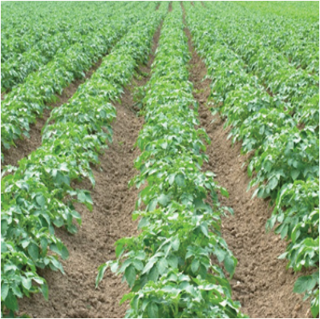

for the fresh market. Table varieties include Asante, Meru, Sherehekea, and
Saggita. Chips varieties such as Tengeru, Rumba, and Panamera are the most
appropriate for making chips; Markies Varieties are used for making thin, round
fried potato slices (crisps).


Figure 5.1(a) A field of round potato
Source: https://spudsmart.com/strategies-for-
protecting-potato-crops-from-key-weeds/
Figure 5.1(b) Round potato tubers
Source:https://www.apnikheti.com/en/pn/
agriculture/horticulture/vegetable-crops/
potato
Activity 5.1
Use various learning resources, including an atlas and internet searches, to
perform the following:
(a) Identify regions with high production of round potatoes.
(b) Suggest measures that can be taken to improve the production of round
potatoes in Tanzania.
(c) Summarise what you have learnt in your portfolio.
Principles and practices of growing round potato
Adhering to principles and good agronomic practices (GAPs) increases its
productivity. The following sub-sections present GAPs underlying the production
of round potatoes.